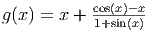
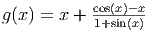
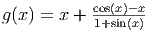

O método de Newton aplicado a encontrar a raiz x* da função y = f(x) estudado na primeira área de nossa disciplina consiste em um processo iterativo. Em cada passo deste processo, dispomos de uma aproximação x(k) para x* e construímos uma aproximação x(k+1). Cada passo do método de Newton envolve os seguintes procedimentos:
|
|
Observação: y = f(x(k)) + (x - x(k))f′(x(k)) é a equação da reta que tangencia a curva y = f(x) no ponto (x(k),f(x(k))).
Queremos, agora, generalizar o método de Newton a fim de resolver problemas de várias equações e várias incógnitas, ou seja, encontrar x1,x2,…xn que satisfazem as seguinte equações:
Podemos escrever este problema na forma vetorial definindo o vetor x = [x1,x2,…,xn]T e a função vetorial

Exemplo 5.0.1. Suponha que queiramos resolver numericamente os seguinte sistema de duas equações e duas incógnitas:


Neste momento, dispomos de um problema na forma F(x) = 0 e precisamos desenvolver uma técnica para linearizar a função F(x). Para tal, precisamos de alguns conceitos do Cálculo II.
Observe que F(x) - F(x(0)) pode ser escrito como

Usamos a regra da cadeia
 | (5.1) |
Definimos então a matriz jacobiana por


Nestes termos podemos reescrever (5.1) como